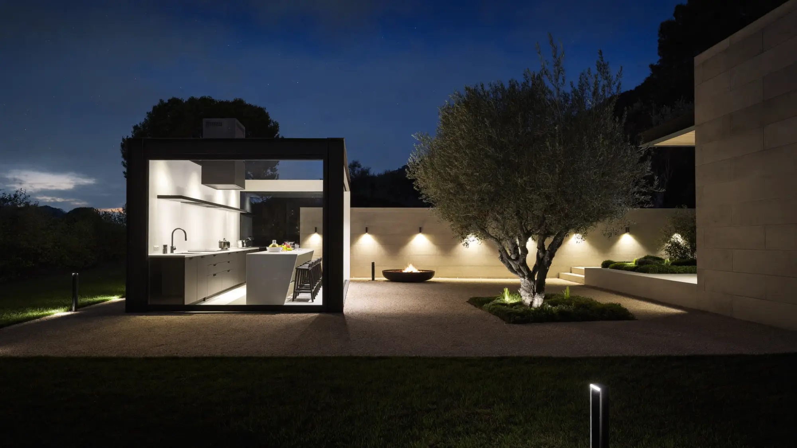
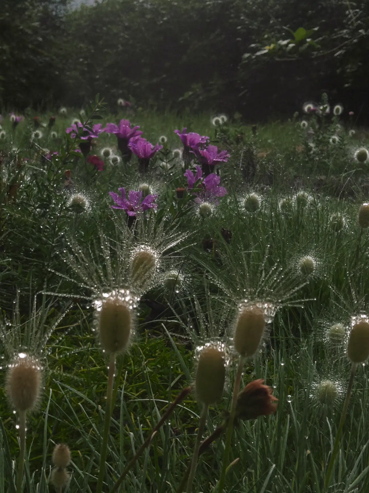

Garden design and build
Outside,reimagined.
Terraces, planting, water and light. Designed on paper, built by our own crew, finished by hand.
A great garden is not a lawn and a fence. It is the room you use most in summer, the view you wake up to in winter, and it should get better every single year.

Planted by hand
Every scheme is planted by the people who designed it. Layered borders chosen for soil, light and four seasons of colour.

Lit for the evening
Low warm lighting, fire and an outdoor kitchen. The garden keeps going long after the sun has gone.

Alive all year
Grasses, alliums and structure that still look good on a frosty January morning.

Same garden, twelve weeks apart
From mud to masterpiece.
What we do
Everything outside the back door.
- 01Garden designA measured survey, a scaled plan and a planting scheme you can walk through in 3D before anything is dug.
- 02Hard landscapingPorcelain and natural stone terraces, paths, steps and walls, laid on proper foundations with drainage built in.
- 03PlantingBorders, hedging and specimen trees sourced from specialist nurseries and planted by our own team.
- 04Water and lightingReflecting pools, rills and low voltage lighting designed as part of the scheme, not added at the end.
- 05Outdoor livingKitchens, fire pits, pergolas and garden rooms for evenings outside.
- 06AftercareSeasonal maintenance visits so the garden grows into the design instead of away from it.
Recent gardens
Made to be walked through.
How it works
Four steps from sketch to soil.
We walk the space with you, talk through how you want to use it and take measurements.
A scaled plan, planting palette and 3D views, refined together until it feels right.
One crew from groundworks to final planting, with a clear programme and a tidy site.
Aftercare visits through the first year so everything settles in and thrives.
Book a garden visit